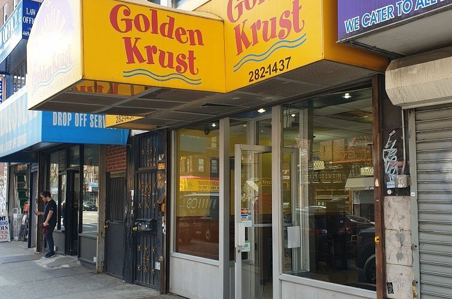
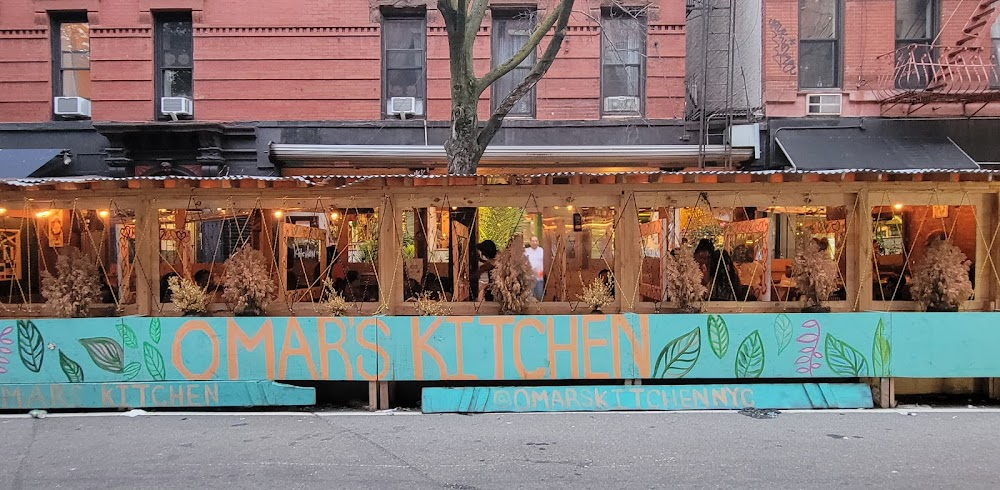

Miss Lily's Restaurant
Miss Lily's 7A Cafe is an East Village outpost of the popular Caribbean restaurant Miss Lily's, known for its lively atmosphere and authentic Jamaican cuisine.

Central Caribbean Bakery
The Bronx's best kept secret. Wide array of Jamaican pastry and delectable delights. As a fusion of both a restaurant and bakery, it offers a unique taste of Jamaican culinary.

Golden Krust Bakery & Restaurant
Golden Krust Caribbean Bakery, Inc. is a Caribbean fast casual restaurant operator and manufacturer of Caribbean cuisine including Jamaican food, Jamaican patty, and other baked goods.

Omar's Kitchen & Rum Bar
Omar's Kitchen is a nouveau Caribbean restaurant found in the heart of New York City's Lower East Side. Funky, colorful venue offering creative Caribbean classics, plus desserts, rum & outdoor seating.